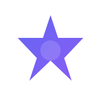
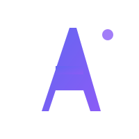
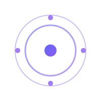
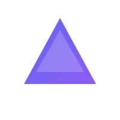
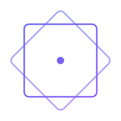
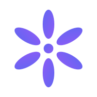

请选择你最喜欢的设计风格






根据项目特性（Apple Silicon LLM 推理运行时），以下是我的推荐：
Option 3 (Orbital) 或 Option 5 (Tech Squares)
科技感强，代表 AI/推理，现代专业
Option 2 (Letter A)
独特易识别，代表项目名称，现代感
Option 4 (Triangle)
简洁有力，代表速度和能量